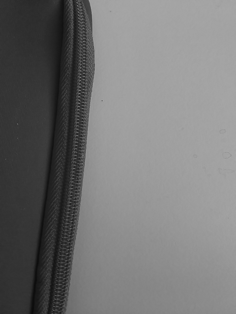
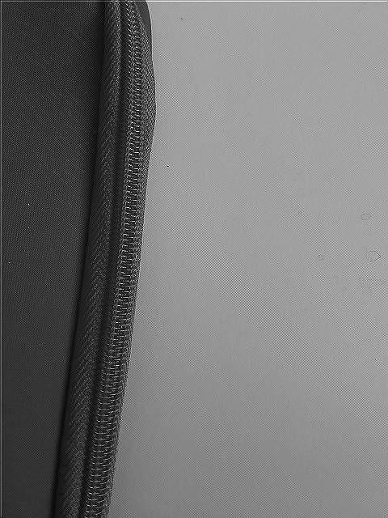
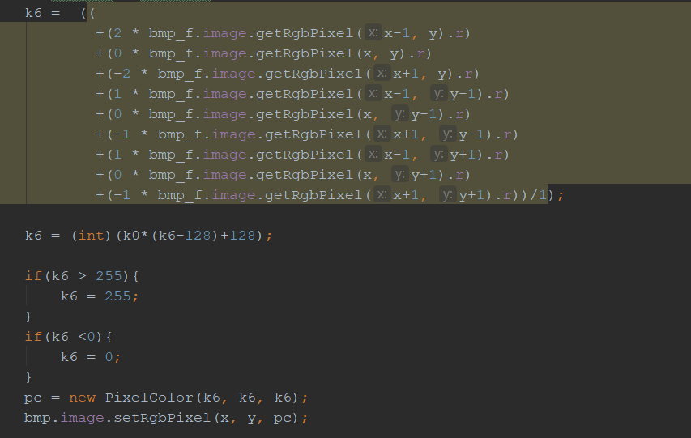

Wie man an unserem unten stehenden Code erkennen kann haben wir den Filter mit Hilfe einer for-Schleife implementiert. Dabei haben wir für Punkte, die außerhalb des Bildes liegen würden eine if-Bedingung angewandt, die diese abfängt. Solche Punkte werden nun auf unsere mittlere Helligkeit gesetzt. Dies schien uns die beste Möglichkeit, die Randpixel nicht allzusehr zu verändern.
Nun zu unseren Bildern:
Flächenbild nicht verändert:
Flächenbild nach Filter:
Detailbild nicht verändert: 
Detailbild nach Filter:
Wie man sehr schön erkennt, sind die Kanten wesentlich weicher geworden und das Bild wirkt im Gesamten unscharf. Bei unserem Detailbild kann man auch erkennen, dass sehr feine Linien, die links im Bild liegen komplett verschwinden. Das liegt daran, dass Pixel an Kanten meist viele Pixel anderer Helligkeiten um sich herum haben. Durch den Filter gehen diese anderen Helligkeiten mit ein in die Pixelberechnung und Randpixel der Kanten werden heller oder dunkler, was die Kanten weniger scharf wirken lässt.
Das Differenzbild zeigt vor allem die Kanten, die aus dem Bild genommen wurden und weniger scharf geworden sind. Hier bestätigt sich unsere Beobachtung.
Differenzbild der Fläche:
Differenzbild des Detailbildes:
Hier sieht man auch noch einmal, dass die feinen Linien des Bildes im Differenzbild auftauchen, das heißt sie wurden tatsächlich durch den Filter komplett entfernt.Wir haben mit einem Kontrast von k=3 gearbeitet, um das Bild ein bisschen deutlicher zu machen.
Der Code dazu:
Zunächst einmal die Erklärung des Codes. Er funktioniert im Grunde genau wie der Code aus der ersten Aufgabe, allerdings muss man die Pixel unterscheiden, da nicht jeder Pixel gleich in die Rechnung eingeht. Das haben wir mit verschiedenen if-Bedingungen gelöst. Am Ende muss der Wert durch 4 geteilt werden, damit wir Werte zwischen 0 und 255 erhalten.
Wir haben dann noch zwei Bedingungen eingebaut, falls die Werte doch über 255 oder unter 0 liegen sollten, was im Extremfall passieren kann, wenn ein sehr heller Pixel zum Beispiel nur von dunklen Pixeln umgeben ist.
Nun zu den Bildern. Man sieht deutlich, dass die Kanten schärfer geworden sind. Das liegt daran, dass die Werte um den Pixel selbst negativ oder gar nicht in die Pixelberechnung eingehen. Das heißt sehr dunkle Pixel mit hellen Pixeln um sich herum werden noch dunkler und der Übergang wird extremer.
Detailbild mit Filter: 
Flächenbild mit Filter:
Im Differenzbild haben wir wieder den gleichen Code verwendet, wie in 1., da er sich nicht verändert hat.
Differenzbilder:Differenzbild des Detailbildes:
Differenzbild der Fläche:
Hier sehen wir sehr ungenaue Veränderungen, die sich allerdings alle an den Kanten der Bilder ansammeln. Das heißt, dass die Kanten von Ungenauigkeiten befreit wurden und schärfer geworden sind.
Für diesen Filter haben wir alle unsere Matrizenwerte in ein Array abgelegt und dieses Array dann sortiert. Man kann nun den Wert aus dem Array nehmen, der in der Mitte liegt und hat den mittigsten Wert.
Unser Bild mit Fehlern sieht ohne Filter so aus:

Das Filterbild sieht bei uns so aus:
Man sieht deutliche Veränderungen. Manche Fehlerstriche sind komplett entfernt worden. Allerdings sind auch einige wenig oder gar nicht verändert.
Das könnte zum einen daran liegen, dass die weißen Striche zu lang oder dick waren oder sie schlecht für die Matrizenberechnung gelegen haben. Wenn zu viele Pixel eines Fehlers in der Matrix selbst liegen. Wenn nun also mehr als die Hälfte aller Pixel in der Filtermatrix Fehler sind, dann wird dieser nicht korrigiert.
Zunächst der Code für die vertikale Richtung des Filters:

Und der Code für die horizontale Richtung:
Die Bilder sehen wiefolgt aus:
Fläche horizontal gefiltert:
Detailbild horizontal gefiltert:
Fläche vertikal gefiltert:
Detailbild vertikal gefiltert:
Die Bilder zeigen im Grunde das, was von ihnen erwartet wird. Die Kanten werden angezeigt und alles andere wird ausgeblendet und ist nur noch als graue Fläche gezeigt. Interessant ist allerdings das Detailbild der horizontalen Filterung. Dieses zeigt nur eine graue Fläche. Das wird vermutlich daran liegen, dass bei einer horizontalen Abtastung des Bildes keine horizontalen Kanten angezeigt werden. Da wir in unserem Detailbild allerdings nur horizontale Kanten haben, werden keine Kanten angezeigt.